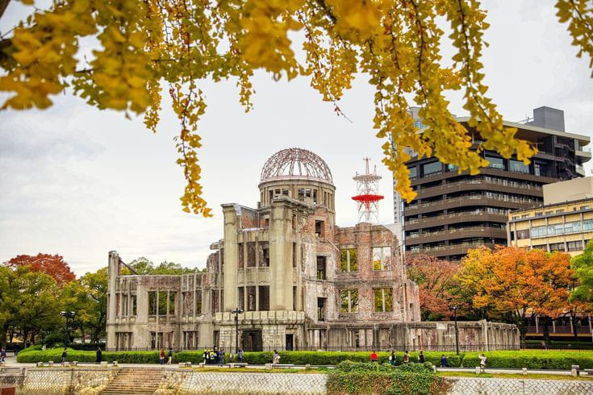

Hiroshima Peace Memorial

Kubah Bom Atom atau Kubah Bom Atom, adalah sebuah bangunan yang sebagian hancur dan berdiri sebagai peringatan bagi para korban bom atom di Hiroshima pada tanggal 6 Agustus 1945. pada akhir Perang Dunia II. Terletak di Taman Peringatan Perdamaian Hiroshima di Hiroshima, Jepang.
Bangunan ini awalnya merupakan Balai Promosi Industri Prefektur Hiroshima. Itu adalah satu-satunya bangunan yang masih berdiri di sekitar hiposenter bom atom, terletak kira-kira 160 meter (520 kaki) ke arah tenggara. Rangka baja bergaris khas bangunan itu rusak parah, namun tetap berdiri.
Monumen Perdamaian Hiroshima ditetapkan sebagai Situs Warisan Dunia UNESCO pada tahun 1996. Ini adalah simbol kuat dari kekuatan destruktif senjata nuklir dan pengingat akan pentingnya perdamaian dunia. Hiroshima Peace Memorial wajib dikunjungi bagi siapa pun yang tertarik mempelajari sejarah Perang Dunia II dan bom atom. Hal ini merupakan pengingat serius akan dampak buruk perang nuklir dan seruan kuat bagi perdamaian.